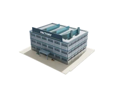
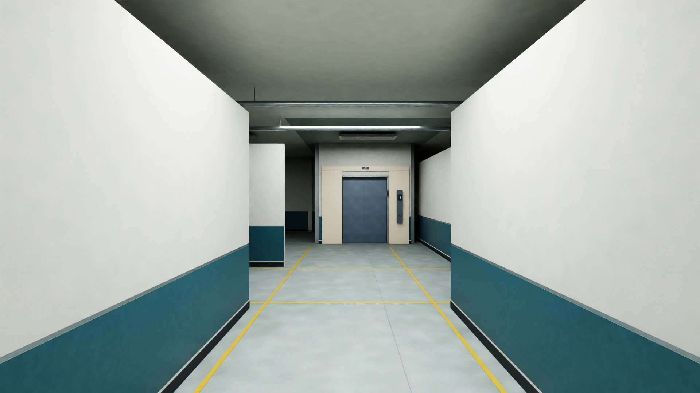
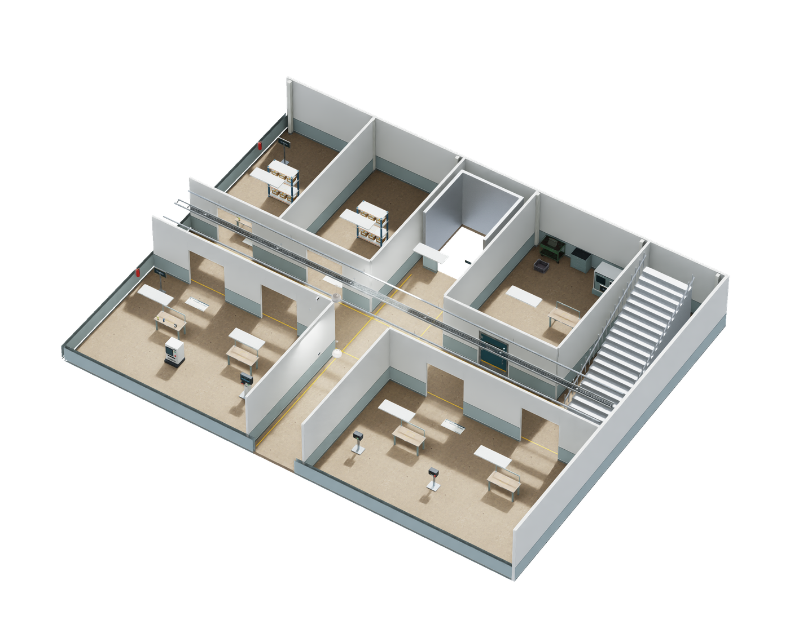

货梯跨层到达
空手操作货梯，从一楼到二楼并完整驶出，保留正常门联锁和等待时间。
通用任务 · 双本体验证待完成ENVIRONMENT 09 / 9
09LIGHT INDUSTRIAL


Interior
INSIDE THE ENVIRONMENT
Select a level to explore its interior.

CAPABILITIES & EMBODIMENTS
通用任务面向 FWMiniPiper 与 G1；专用任务测试指定本体的特有能力。当前均为待验证设计，不表示已完成物理执行。
一楼 A 收发、B 物料、C 连接件、D 维修、E 装配；二楼 F 检验交接、G 供应间及其他交付区；三楼复制二楼布局，货梯和楼梯连接全部三层。
空手操作货梯，从一楼到二楼并完整驶出，保留正常门联锁和等待时间。
通用任务 · 双本体验证待完成空手从一楼到二楼指定公共停靠区，再重新呼梯回一楼；终点与起点相同，仍须有两段真实乘梯记录。
通用任务 · 双本体验证待完成以 T05 的维修间门为设施来源，打开、进入、退出并关闭，不包含取件目标。
通用任务 · 双本体验证待完成以原 T06 的 G 供应间滑门为来源，滑开、进入、退出并关门；不取滤芯盒。
通用任务 · 双本体验证待完成从 T06 绑定实际滑轨关节，验证把手接触、门行程与两种身体包络。
尚未启用正式评测；需完成初态配置、成功判据及指定本体的完整物理轨迹验证。
按工区清单设置指定照明回路，保持其他工区状态。
通用任务 · 双本体验证待完成在本场景指定可达空调面板上观察初态，将开关、模式和设定值改为任务要求；至少一项需改变，其他设备不变。评分使用面板与控制器实际状态，不要求室温达到设定温度。
通用任务 · 双本体验证待完成需验证两种夹爪不误触相邻按键，并接入模式、开关和设定值裁判；不把按钮几何存在当作可按或热效果证据。
尚未启用正式评测；需完成初态配置、成功判据及指定本体的完整物理轨迹验证。
把 C01 的指定橙色连接件盒送到一楼 E01 装配工位，拒绝相邻 E02。
通用任务 · 双本体验证待完成需按本任务配置动态物品、身份或数量标签、交接与暂放区域及指令专属历史判据；源站点存在不代表新任务初态已实现。
尚未启用正式评测；需完成初态配置、成功判据及指定本体的完整物理轨迹验证。
把一楼 E02 的小型样件经货梯送到二楼 F01 检验交接台，允许面板交互前暂放。
通用任务 · 双本体验证待完成需按本任务配置动态物品、身份或数量标签、交接与暂放区域及指令专属历史判据；源站点存在不代表新任务初态已实现。
尚未启用正式评测；需完成初态配置、成功判据及指定本体的完整物理轨迹验证。
读取一楼 E01 与二楼 F01 可见库存，仅向不足阈值的工位从 B01 和 C01 补对应小物料盒。
通用任务 · 双本体验证待完成需按本任务配置动态物品、身份或数量标签、交接与暂放区域及指令专属历史判据；源站点存在不代表新任务初态已实现。
尚未启用正式评测；需完成初态配置、成功判据及指定本体的完整物理轨迹验证。
从二楼 F02 取编号正确的轻型量具盒，经货梯送到一楼 A02 回收区，避免与 A01 入库区混淆。
通用任务 · 双本体验证待完成需按本任务配置动态物品、身份或数量标签、交接与暂放区域及指令专属历史判据；源站点存在不代表新任务初态已实现。
尚未启用正式评测；需完成初态配置、成功判据及指定本体的完整物理轨迹验证。
滑开二楼 G 供应间门取可共同抓取的滤芯盒，暂放并关门，送到二楼 F01 检验台，再按任务要求恢复该层照明。
通用任务 · 双本体验证待完成需按本任务配置动态物品、身份或数量标签、交接与暂放区域及指令专属历史判据；源站点存在不代表新任务初态已实现。
尚未启用正式评测；需完成初态配置、成功判据及指定本体的完整物理轨迹验证。
本场景暂无专用任务。两种本体均可使用上方通用任务候选。